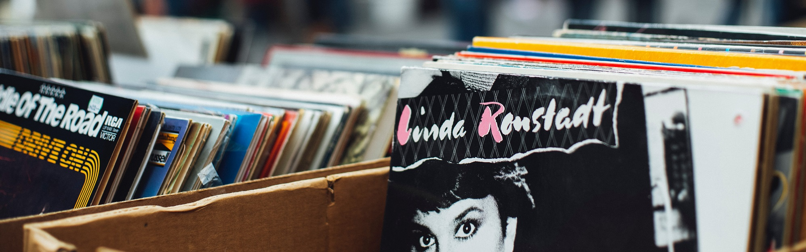

SpoToYou brings your favorite Spotify Playlists directly to you, already listenable for free and allways available on Youtube.
Just enter your username right here and just choose one of your public Playlists and easily convert it.

Type in your Spotify username
select the playlist you´d like to convert
select the tracks you´d like to convert
thanks for using SpoToYou click on the
Link
to get to your converted playlist or just
copy
it. By clicking
here
you´ll return to the log in page and will be able to convert another Playlist.